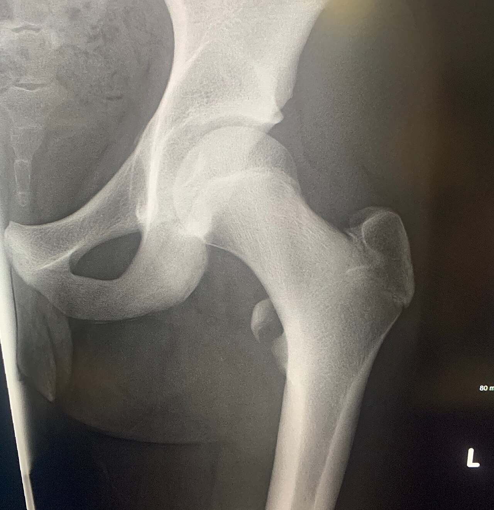

Ficha del catálogo
Fractura por avulsión del trocánter menor
- Sistema
- Óseo
- Modalidad
- RX
- Región
- Cadera
- Dificultad
- Avanzado
El trocánter menor se desprende por la tracción brusca del músculo psoasilíaco. En adolescentes deportistas suele deberse a un esfuerzo intenso, pero en un adulto sin traumatismo importante este hallazgo obliga a descartar una lesión tumoral subyacente que haya debilitado el hueso.
Técnica
Proyección anteroposterior de pelvis o de cadera (conviene comparar con el lado contralateral, que sirve como referencia de normalidad).
Qué observar
- Fragmento óseo desprendido y desplazado en situación medial y superior respecto al trocánter menor
- Zona donante en el fémur proximal, con pérdida del contorno habitual del trocánter
- Densidad y trabeculado del hueso vecino, buscando lesiones líticas que expliquen una fractura patológica
- Integridad del cuello femoral y del resto del fémur proximal
- Simetría con la cadera contralateral
Hallazgos
Fragmento óseo avulsionado a nivel del trocánter menor con desplazamiento respecto a su lecho, sin trazo que se extienda al cuello femoral.
Perlas
Regla clásica: Avulsión aislada del trocánter menor en un adulto mayor de 40 años sin traumatismo adecuado equivale a lesión metastásica mientras no se demuestre lo contrario. Es un signo pequeño con implicaciones enormes.
Diagnóstico diferencial
- Fractura patológica sobre metástasis
- Se identifica destrucción trabecular, lesión lítica o pérdida cortical en el fémur proximal alrededor de la zona donante, y el mecanismo traumático es mínimo o inexistente.
- Avulsión fisaria del trocánter menor en el adolescente
- El desprendimiento ocurre a través del cartílago de crecimiento en un contexto deportivo agudo, con fisis todavía abierta y hueso vecino de densidad normal.
- Fractura pertrocantérea
- El trazo cruza entre ambos trocánteres y compromete la continuidad del fémur proximal, con acortamiento y rotación externa del miembro.
- Fractura del cuello femoral
- El trazo se sitúa por encima de los trocánteres, interrumpe la línea de continuidad cervicocefálica y no afecta de forma aislada al trocánter menor.
- Avulsión de otras apófisis pélvicas
- El fragmento procede de la espina ilíaca anteroinferior, de la anterosuperior o de la tuberosidad isquiática, y su localización anatómica lo diferencia con claridad.
Simuladores
- La rotación externa del miembro proyecta el trocánter menor de forma prominente y puede simular un fragmento desprendido (se resuelve comparando con la cadera contralateral en la misma posición).
- Calcificaciones en la inserción del psoas o entesofitos crónicos aparecen como densidades adyacentes de bordes lisos, sin zona donante en el hueso.
- Los flebolitos pélvicos son redondeados, con centro claro, y se sitúan fuera del contorno óseo.
- En el adolescente los núcleos de osificación apofisarios normales son simétricos y de bordes regulares, y no deben confundirse con avulsión.
Por modalidad
- RX
- Detecta el fragmento y la zona donante y permite una primera valoración de la calidad del hueso vecino; es el estudio inicial.
- TC
- Define mejor la extensión del trazo, confirma o descarta destrucción ósea subyacente y valora el resto de la pelvis en busca de otras lesiones.
- RM
- Muestra el edema medular, el estado de la inserción del psoas y, sobre todo, la infiltración medular tumoral cuando se sospecha causa patológica.
- US
- Puede valorar el tendón del psoasilíaco y colecciones adyacentes, con la limitación de la profundidad de la región.
Protocolo
Proyección anteroposterior de pelvis en decúbito supino con ambos pies rotados internamente unos 15°, lo que despliega el cuello femoral y permite una comparación simétrica entre las dos caderas. Se añade una proyección lateral de la cadera afectada, en posición de rana o con haz horizontal si se sospecha fractura del cuello. Cuando el contexto sugiere causa patológica se completa con tomografía de cortes finos y con resonancia que incluya secuencias sensibles al líquido y estudio de la médula ósea.
Clasificación
No existe una escala específica de uso universal para esta lesión. En la práctica se describe según el desplazamiento del fragmento y, sobre todo, según el contexto: Avulsión apofisaria en el paciente esqueléticamente inmaduro frente a fractura patológica en el adulto. Cuando se documenta enfermedad metastásica se utilizan escalas de riesgo de fractura inminente en hueso largo, que valoran el tamaño de la lesión, su localización, si es lítica o blástica y la intensidad del dolor, para decidir si procede fijación profiláctica.
Errores frecuentes
- Informar la avulsión como lesión banal en un adulto sin buscar de forma explícita una lesión ósea subyacente.
- No comparar con la cadera contralateral, lo que hace confundir una proyección rotada con un fragmento desplazado.
- Limitar el estudio a la cadera y no revisar el resto de la pelvis y del fémur visible, donde pueden verse otras lesiones.
- Detener el estudio en la radiografía cuando la sospecha clínica de causa patológica obliga a completar con tomografía o resonancia.

femur trocanter avulsion cadera psoas fractura patologica metastasis